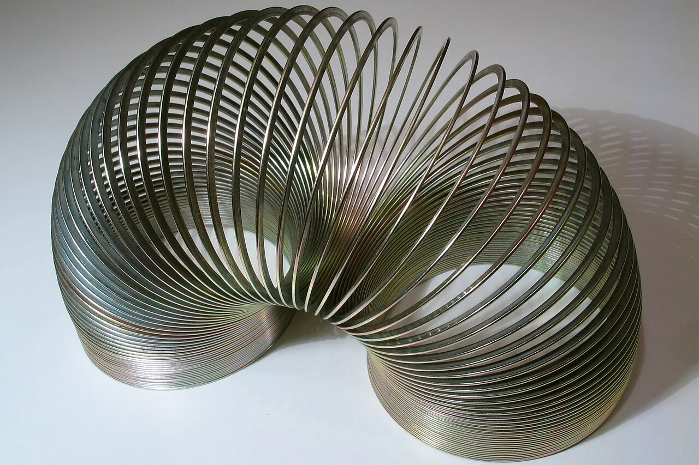

Three Old Toys With Names That Should Have Been a Warning
A set of lawn darts, a toy called Clackers and a science kit with real uranium. We all played with something like it. Looking back, what were we thinking?
Read the storyWHAT'S IN A NAME? - TOYS & CHILDHOOD
Frisbee. Slinky. Silly Putty. Pet Rock. Hula Hoop. Chia Pet. You said them a thousand times without wondering who came up with them, or why.
Say these words out loud: Frisbee. Slinky. Silly Putty. Pet Rock. Hula Hoop. Chia Pet.
None of them describes what the toy does. All of them are easier to remember than the toy itself. Here is where they came from.

The flying disc first sold as the "Flyin-Saucer", then the "Pluto Platter". In 1957, the toy company Wham-O changed the name to Frisbee. The man who invented the disc, Walter "Fred" Morrison, told a reporter fifty years later: "I thought Frisbee was a terrible name. I thought it was insane."
Where did the word come from? A popular story says students in New England used empty pie tins from the Frisbie Pie Company of Bridgeport, Connecticut, as flying discs and shouted "Frisbie!" as they threw. Connecticut's historians call that story entertaining but unproven. It is still a good one to tell at a picnic.

Richard James, a naval engineer, saw a spring fall and bounce across the floor, and spent about two years turning it into a toy. His wife Betty had the job of naming it. She went through the dictionary and picked "slinky", a word that means graceful in movement.
More than 250 million Slinkys have been sold, according to one reference book. Do you remember the jingle? "What walks down stairs, alone or in pairs..."
It began as a failed experiment. During World War II, chemists were looking for a substitute for rubber, and one of them found a stretchy goo that bounced, flowed slowly and snapped when struck. It was never useful as rubber. But people loved to play with it at parties.
A toy marketer named Peter Hodgson saw the fun in it, sold it in plastic eggs, and gave it the name Silly Putty at the 1950 International Toy Fair. By August of 1950, The New Yorker reported bookshop clerks too busy selling it to help with books.

In 1975, a California advertising man named Gary Dahl had an absurd idea: what if there were a pet that needed no care and no feeding? He bought smooth stones at a builders' supply store, for about a penny each, packed each in a little cardboard "pet carrier" with wood shavings, and added a deadpan manual, the Pet Rock Training Manual.
He introduced it at a San Francisco gift show in August 1975, and the fad swept the country that holiday season. More than a million Pet Rocks were sold by Christmas 1975, according to the Strong National Museum of Play.

Wham-O took the Australian idea of bamboo exercise hoops, made them in bright plastic and trademarked the name Hula Hoop. The word hula was older than the toy. Wired says British sailors who saw hula dancing in Hawaii recognized the same hip movements as hooping, and the name stuck. In 1958 alone, Wired reports, Wham-O sold twenty-five million of them.
The result was one of the biggest toy fads ever. If you were a child in the late 1950s, you probably remember someone who could keep one going for an hour. If you were a parent, you remember the bruised hips.

In March 1977, advertising man Joseph Pedott was walking a housewares trade show in Chicago when a drugstore executive told him about "this stupid item called the Chia Pet." Pedott saw something else, and he turned the terracotta figures that grow green "fur" into one of America's best-known gift items.
"Ch-ch-ch-Chia!" is a jingle many of us can still sing. It is the name and the sound together that did the work.
Frisbee is a pie company. Slinky came from a dictionary. Silly Putty was honest. Pet Rock was a joke. Hula Hoop was an old word, and Chia Pet was a jingle. Which one did you own, and what did you name it?
Share this with someone who played with you. They might remember the toy you forgot.
A set of lawn darts, a toy called Clackers and a science kit with real uranium. We all played with something like it. Looking back, what were we thinking?
Read the story
Remember Saturday morning cartoons? Scooby-Doo, Super Friends, the Smurfs, and the cereal bowl in front of the TV. A warm look back.
Read the story
10 questions about familiar objects. No timer.
AI-created period illustration
Take the quiz← Back to Dear Old Days · All articles · About · Privacy policy · Photo credits · Cookie settings